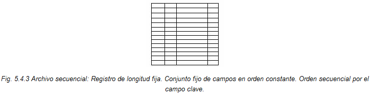
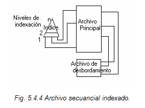
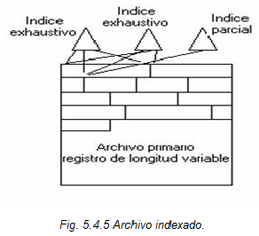
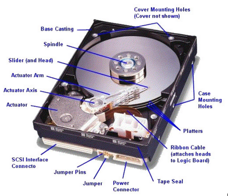

4.2 Requerimientos de la gestión de memoria
4.2.1 Reubicación
En los sistemas con memoria virtual, los programas durante su ejecución pueden salir por un tiempo de la memoria y luego regresar, de modo que no pueden colocarse en el lugar que ocupaban previamente. Por ello debe ser posible que residan en diferentes partes de la memoria en diferentes momentos. Así, la gestión de memoria en el sistema operativo debe ser capaz de trasladar los programas en memoria y manejar referencias a la memoria y las direcciones en el código del programa para que siempre apunten a la ubicación correcta. La unidad de gestión de memoria virtual también debe hacer frente a la concurrencia. Reubicación crea un espacio lógico independiente para el proceso. El Sistema operativo debe poder acceder a espacios lógicos de los procesos.
4.2.2 Protección

El sistema operativo sólo puede combinar el nivel de referencia y nunca puede hacer una referencia al bloque de control de procesos. Los procesos no deberían ser capaces de referenciar el espacio de memoria de otro proceso sin permiso. Es imposible comprobar las direcciones absolutas de los programas puesto que estos pueden ser reubicado La protección de memoria es un método para controlar el uso de memoria en una computadora, y es parte esencial de prácticamente todos los sistemas operativos modernos. El principal propósito de la protección de memoria es evitar que un proceso en un sistema operativo acceda a la memoria que no le ha sido asignada.
4.2.3 Compartición
La memoria compartida es una de las técnicas más rápidas para posibilitar la comunicación entre procesos. En la compartición, el segmento de datos y el segmento de código comparten el mismo segmento de código pero cada un conserva su independencia trabajando individualmente.
- A varios procesos acceder a la misma zona de memoria.
- A cada proceso (persona) acceso a la misma copia del programa que tener a cada uno su copia individual.
- Accesos controlados a las áreas compartidas de la memoria, sin comprometer la protección básica.
Un ejemplo de este requerimiento es, si una serie de procesos están ejecutando en el mismo programa, resultaría beneficioso permitir a cada proceso que acceda a la misma copia del programa, en lugar de tener cada uno su propia copia.
4.2.4 Organización Lógica y Física de un Sistema Operativo
Se refiere a las diferentes maneras en las que puede ser organizada la información de los archivos, así como las diferentes maneras en que ésta puede ser accesada. Dado que hay 2 niveles de visión de los archivos (físico y lógico), se puede hablar también de 2 aspectos de organización de archivos: Organización de archivos lógicos y de archivos físicos
La mayor parte de las estructuras de organizaciones alternativas de archivos se encuentran dentro de estas cinco categorías:
Pilas

Es la forma más fácil de organizar un archivo. Los datos se recogen en el orden en que llegan. Su objetivo es simplemente acumular una masa de datos y guardarla.
Archivos secuenciales
Es la forma más común de estructura de archivos. Se emplea un formato fijo para los registros, son de la misma longitud y constan del mismo número de campos de tamaño fijo con un orden determinado.
Archivos secuenciales indexados

Los registros se organizan en una secuencia basada en un campo clave presentando dos características, un índice del archivo para soportar los accesos aleatorios y un archivo de desbordamiento. El índice proporciona una capacidad de búsqueda para llagar rápidamente al registro deseado y el archivo de desbordamiento es similar al archivo de registros usado en un archivo secuencial, pero está integrado de forma que los archivos de desbordamiento se ubiquen siguiendo un puntero desde su registro predecesor.
Archivos indexados

A los registros se accede solo a través de sus índices. No hay restricción en la ubicación de los registros, al menos un índice contiene un puntero a cada registro y pueden emplearse registros de longitud variable.
Discos Magnéticos

El archivo físico en un disco es una colección de registros físicos de igual tamaño, los cuales pueden estar organizados en forma consecutiva, ligada o con una tabla de mapeo